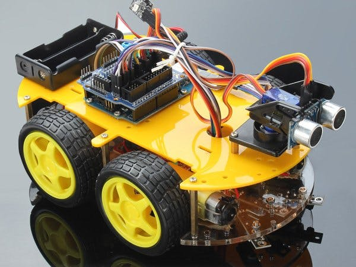

GETTING STARTED:
Arduino is an open-source electronics platform based on easy-to-use hardware and software. Arduino boards are able to read or take in an input and turn it into an output. This library was programmed to detect sounds and classify them as either good/positive or bad/negative.
CONTENTS
Pre-Required Materials
Tutorial
FAQs
Pre-Required Materials:
Wheels, Frame, and Motor Kit
Circuit Board compatible with Arduino
Microphone attachments for circuit board
Motor driver
Links for Pre-Required Materials:
Wheels and Frame Kit
Arduino Circuit Board
Arduino Microphones
Motor Driver

TUTORIAL:
How to Start :
1. Download Arduino IDE:
Download
- Select the software tab
- Select the download option that is
best for you
- Complete the setup and install
2. Download Echolocation Library
3. In Arduino IDE go to Sketch -> Include Library -> Add .ZIP Library

4. Select the echolocation library zip file from where it was downloaded
5. Once the sound library is downloaded,
functions can be modified as needed
Q and A
Can the Arduino robot detect any kind of sound?
While the microphones can detect any sound that is loud enough, the library will only be programmed to identify specific sounds.
Can the library be changed?
Once the library is downloaded, it can be modified locally to fit the user's needs.
How much does it cost to download the library?
The library is free for all users and considered an open-source project.